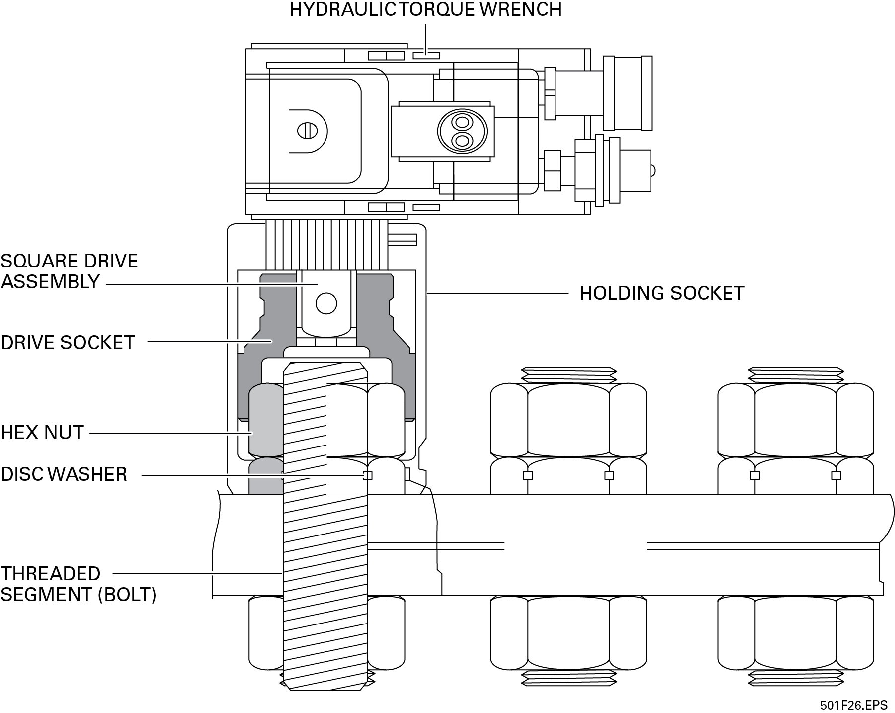

6.2.5 Tensioning Nuts and Bolts
The idea behind tensioning activities is to load more evenly all the bolts used in a connection. The tensioning effect is similar to stretching a spring a little, but not overstretching it. With bolts, the tensioning tends to stretch them a specific amount without damaging them. To accomplish this action, special washers such as the soft joint disc or the hard joint disc shown earlier are used. When used with conventional nuts, these discs are installed between the conventional nut and the surface of the member. These discs are designed to absorb the reactionary forces normally found between the conventional nut and the surface of the member being secured. Some special discs require no lubricants. Lubricate the bolt threads and nut only if required by the assembly specifications.
As far as the operation of the torquing tool is concerned, the operation is essentially the same as those used for conventional nuts, except an extra socket is used to hold the disc washer in place while the regular socket twists the conventional nut. Figure 25 shows different views of the tools used in tensioning.
The first image in Figure 25 identifies the parts used in a tensioning procedure. The second image shows the L-T (loose or tight) switch in the neutral position and the socket being twisted clockwise to seat it. The third image shows that the L-T switch has been moved to the T position, and the direction in which the socket will move when the torquing and tensioning tool begins to tighten. The fourth image shows a close-up view of the locking groves at the edges of the disc washer. The last image shows that the twisting and vertical motions stop when the tensioning has been completed.
Perform the following steps to tension nuts and bolts:
-
Inspect the surface areas around the mounting holes of each member to make sure they are as flat as possible and do not have burrs left over from drilling.
-
Ensure that the face surfaces of the two members being joined are evenly positioned together and any gasket materials are installed.
-
Ensure that the holes of the two members being joined are perfectly aligned and clear. Members must be positioned so that there is no stress or strain on either when they are coupled.
-
Install the bolts (and any washers at the bolt heads) by hand.
-
Position a disc washer so that the flat surface of the washer will mount against the surface of the member, and then place the disc washer onto the first bolt and against the member surface.
-
Thread the conventional nut onto the bolt and tighten hand tight.
-
Install a disc washer and nut onto each of the other bolts being used for the connection and tighten hand tight.
-
Find and install any wrenches needed to hold the bolt heads.
-
Review the torquing and tensioning specifications again for the bolts and nuts being installed.
-
Set the hydraulic pump pressure to the desired level and lock it.
-
Obtain a holding socket to fit the nuts and washers being used.
-
Connect the appropriate square drive assembly to the socket.
Note:NOTE
The holding socket with the square drive assembly installed may sometimes be called the driver assembly.
-
Position the holding socket so that the L-T switch and inspection ports are facing the operator when installed.
-
Hold the socket in position and move it down over the conventional nut and the disc washer.
-
Move the L-T switch into the T position.
-
Twist the socket by hand in the clockwise direction (as seen from above) to verify that the socket firmly seats over the nut and locks onto the washer.
-
Test operate the hydraulic torquing and tensioning tool to verify that it is turning in the proper direction. For this module, this will be the same tool used earlier for torquing.
-
Move the torquing and tensioning tool so that it will engage the square drive assembly. Figure 26 shows a cutaway view of a torquing and tensioning tool engaged on top of a tensioning socket.
Figure: Figure 26 Engaged torquing and tensioning tool atop tensioning socket.  -
Pressurize the tool momentarily to verify that the tool properly engages the socket. If the socket does not engage, remove the tool and reposition the socket. If it still rotates, remove the socket, the nut, and the washer and make sure that the surface areas of the washer and the mounting member are free of any oil or grease. If the tool stays stationary, continue to operate it until it stalls.
-
Continue operating the torquing and tensioning tool until it stalls.
-
Disengage the tool from the square drive and move everything to the next bolt to be secured. Remember to use the proper cross-tightening pattern applicable to the members being assembled.
-
Tension all remaining nuts and bolts in the same manner.
-
Remove all the tools and associated hardware when finished and inspect them for damage.
-
Store tools and associated hardware as directed.
Bolt tensioning can be measured using ultrasonic testers. The tensioning is found by measuring the amount of time taken for an ultrasonic shock wave to travel the length of the fastener as it is tightened. Current versions of the meters used can measure length changes, travel time of the wave in nanoseconds, and percent of strain on the fastener.